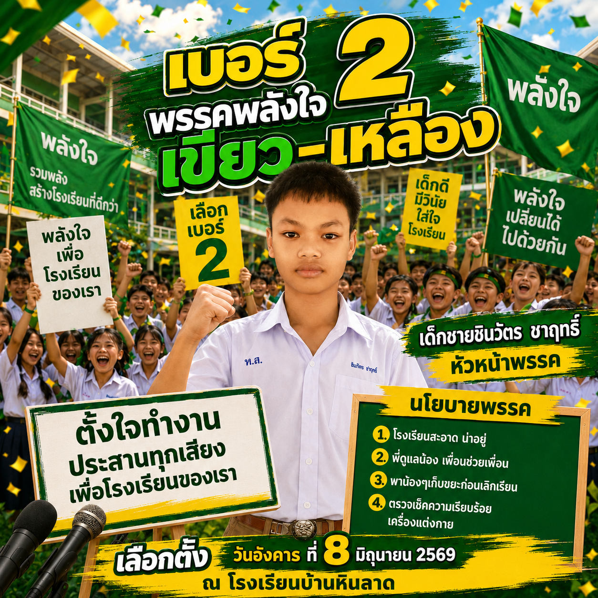

🗳️ ผลการเลือกตั้งประธานนักเรียน
โรงเรียนบ้านหินลาด • กดปุ่มหมายเลข เพื่อประกาศผู้ชนะ
👑
1
เบอร์ 1 • พรรคทันโลก
👑
2

เบอร์ 2 • พรรคพลังใจ
👑
3
เบอร์ 3 • พรรคคนรุ่นใหม่
รอประกาศผล...
🔄 เริ่มใหม่
กด
1
2
3
เพื่อเลือกเบอร์ที่ชนะ (หรือคลิกที่การ์ดก็ได้)